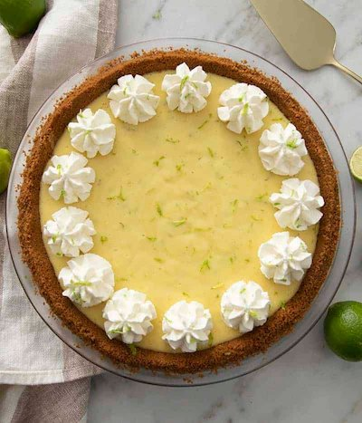

<!DOCTYPE html>
<html lang="en">

</html>

<head>
    <meta charset="utf-8">
    <title>Key Lime Pie</title>
</head>

<body>
    <h1>Key Lime Pie</h1>
    

    <p>This is my favorite key lime pie recipe from <a href="https://preppykitchen.com/key-lime-pie/">John Kanell</a>.
        The filling is perfect, but what really sets this
        recipe apart is the use of Biscoff cookies for the crust instead of the ususal graham crackers. I also add a
        little bourbon to my whipped cream and sub vanilla paste for vanilla extract.
    </p>

    <h2>Ingredients</h2>

    <h3>For the Crust</h3>

    <ul>
        <li>4 tbsp (56g) unsalted butter, melted</li>
        <li>8.8 oz package Biscof Cookies</li>
    </ul>

    <h3>For the Filling</h3>

    <ul>
        <li>21 oz sweetened condensed milk</li>
        <li>2/3 cup (160mL) key lime juice</li>
        <li>3 egg yolks</li>
        <li>2 tsp lime zest</li>
    </ul>

    <h3>For the Decoration</h3>

    <ul>
        <li>1 cup (240mL) heavy cream</li>
        <li>3 tbsp powdered sugar</li>
        <li>1 tsp vanilla extract</li>
        <li>1 tsp bourbon</li>
    </ul>

    <h2>Instructions</h2>

    <ol>
        <li>Heat oven to 350F. Add the cookies to a food processor and pulse until you have fine crumbs. Drizzle in the
            melted butter and pulse until combined. If you don't have a processor handy you could instead use a
            plastic bag and rolling pin, then just mix the crumbs and butter in a large bowl.
        </li>
        <li>Dump the mixture into a 9" pie dish then distribute and use a flat-bottomed glass or measuring cup to press
            the crumbs firmly down. You can use your fingers to press the top down as the side Is compressed.
        </li>
        <li>Bake crust at 350F for 10 minutes.
        </li>
        <li>While the crust is baking, zest two limes and set aside. Then squeeze 2/3 cup of juice and strain out the
            seeds.
        </li>
        <li>
            Add the egg yolks and zest to the bowl of a stand mixer fitted with a whisk attachment and beat for a minute
            or so.
        </li>
        <li>
            Pour in the sweetened condensed milk and mix on medium until fully incorporated then scrape the bowl down
            and pour in the key lime juice while the mixer runs on low. Scrape the bowl down once more and mix.
        </li>
        <li>
            Pour the filling into the warm crust and give it a jiggle to level things out. Bake at 350F for about 10
            minutes then cool on a wire rack for about 20 minutes and chill for at least an hour. You'll see some tiny
            holes in the pie and it will jiggle slightly when it's done baking.
        </li>
        <li>
            Top the pie with dollops of whipped cream and serve.
        </li>
    </ol>

</body>

</html>